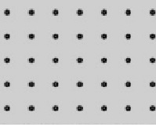
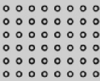

Підвісні стелі «Geipel»
Один із видів підвісних стель - касетна стеля. Стелі цього типу
виробництва фірми Geipel -
вдале поєднання функціональності, якості та краси. Вони володіють усіма необхідними
характеристиками, зокрема вологостійкістю і пожежною безпекою, а крім того, мають
стильний і сучасний вигляд. Серед касетних стель виділяються стелі з дзеркальним
покриттям, за допомогою яких можна візуально збільшити об'єм кімнати, водночас такі стелі
підходять для вологого прибирання і безпечні для здоров'я. Встановити дзеркальну стелю
можна в приміщенні будь-якого типу , чи то житловий будинок, чи то офісна будівля, установа
медичного або навчального призначення.
Модульна конструкція стелі Geipel передбачає легкий і зручний
монтаж навіть у
приміщеннях з великою площею стель, і, що особливо важливо, просту заміну стелі без
заміни самої системи - наприклад, якщо касети зазнали якихось пошкоджень. Природно, це
дасть змогу уникнути зайвих витрат.
Який вигляд має касетна стеля Geipel?
Кожна касета - це панель з алюмінію або оцинкованої сталі, що має квадратну форму.
Незважаючи на те, що можливе замовлення касет практично будь-якого кольору, стандартні
колірні рішення - це білий, дзеркальні срібний і золотий, срібний «металік». Покриття касет
здійснюється за допомогою якісних фарб, стійкість яких перед вологим або іншим
агресивним середовищем дає змогу їм тривалий час залишатися в прекрасному стані.
Надійні матеріали здатні витримувати монтаж і демонтаж неодноразово, зберігаючи при
цьому свій первісний вигляд. Можливі також додаткові характеристики касет для приміщень
з особливими вимогами, наприклад, підвищена вентиляційна здатність досягається за
допомогою перфорації, а для поліпшення акустики застосовується мінеральне скловолокно.
Також за бажанням замовника в касетах можуть бути присутніми вирізи різних форм для
спеціального обладнання - труб, світильників, гучномовців тощо.
Види перфорацій касетної стелі
1. Стандартна перфорація
|  |
|
|  |
|
|
|
|
|
|
Переваги касетної стелі Geipel
 Рівень якості.
Рівень якості.
Для виробництва підвісних касетних стель
Geipel використовують високоякісні
метали -
оцинковану сталь і алюміній.
Товщину металу, яка забезпечує найкращі експлуатаційні властивості касетних
стель,
визначають за допомогою складних інженерних розрахунків.
Поверхні касет у процесі виготовлення
надають ідеальної гладкості, що робить стелю особливо функціональною і, звісно, стильною та красивою.
Міцність і надійність
- Для виробництва касет Geipel використовується метал, захищений від
корозії і здатний витримувати вплив агресивного середовища, тому
стелі Geipel служать протягом багатьох років. - Колір касет зберігається протягом усього терміну експлуатації, тому
що порошкове покриття, яке наносять на них, стійке до пошкоджень і
впливу ультрафіолетових променів. - Касети Geipel з білим покриттям здатні знижувати енерговитрати за
рахунок того, що їхня поверхня може розсіювати і відбивати світло,
стаючи додатковим джерелом світла.